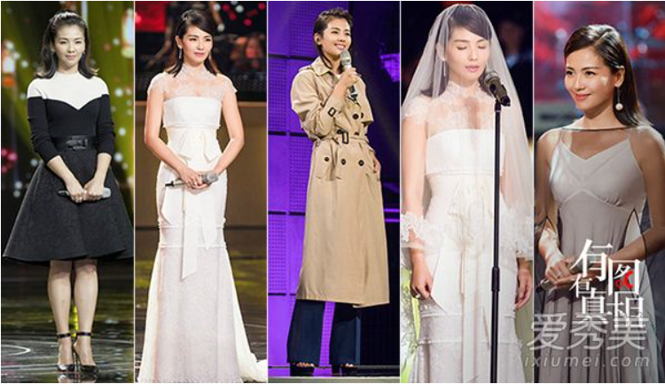

跨界歌王比赛
李宇春开场曲唱的是新歌《存在感》，紧接着《1987我不知会遇见你》《阿么》《对不起，只是忽然很想你》《下个，路口，见》等玉米们耳熟能详的老歌掀起一轮又一轮尖叫。整个演唱会分为野、蛮、生、长四个部分进行。李宇春变换不同造型，唱《开放》时，她换上木槿红单排扣人造皮草外套，与外国dancer配合默契，歌唱过半，李宇春移向钢管，首次挑战钢管舞，性感而不失帅气，引爆全场。
最近，《跨界歌王》异常火爆，从白百何“表白”文章的《你知道我在等你吗》到最新一期“曲妖精”王子文的《生如夏花》，无不引人入胜。但是从开播到现在半决赛之际，最受粉丝关注的当属刘涛了。不少人甚至猜测，为什么刘涛一直没能杀入决赛呢？就是因为有她在场就是收视保证！今天，咱们不谈歌唱得如何，就光看刘涛是怎么从总攻随意切换到仙女，畅快撩汉（妹）！

最新一期中，刘涛变换了两套装扮，特别是身着一袭婚纱演唱《我终于成了别人的女人》的时候，让人无比沉醉。屏幕中的她用头纱半遮脸蛋儿，身着够了身材曲线的蝴蝶结婚纱，仿佛出嫁的女子般明媚动人，歌曲却又透着淡淡悲伤，绝对醉人。这套装扮的不仅嫁衣、头纱如梦似幻，一对优雅的长链条耳坠恰到好处的点缀更是点睛。
- 喜剧总动员第一期嘉玲陈赫好喜欢，刘涛沈腾即兴表演
- 女神刘涛剪了空气刘海像极了宋慧乔
- 王凯跨界唱歌棒极了
- 最喜欢刘涛的《我要我们在一起》
还没有评论的，快来抢占沙发！！